fmp4、mp4结构解析
介绍
本文使用bilibili的直播流（也有部分mp4）为实例进行结构说明，其并不包含全部mp4结构类型。
fmp4结构
Box
Box是mp4的基础结构单元
+---------+-------+
|Box | |
+---------+-------+
|BoxHeader|BoxData|
+---------+-------+
+---------+------+---------+
|BoxHeader| | |
+---------+------+---------+
|size |type |largeSize|
+---------+------+---------+
|4bytes |4bytes|8bytes |
+---------+------+---------+
当size==1时，才有largeSize
mp4总体结构

ftyp
通常放在MP4文件的开头，告诉解码器基本的解码版本和兼容格式。
+--------+------+-----------+-------------+-----------------+
|ftyp Box| | | | |
+--------+------+-----------+-------------+-----------------+
|size |type |major_brand|minor_version|compatible_brands|
+--------+------+-----------+-------------+-----------------+
|4bytes |"ftyp"|4bytes |4bytes |4bytes/per |
+--------+------+-----------+-------------+-----------------+
- major_brand:推荐兼容性的版本
- minor_version:最低兼容性的版本
- compatible_brands:所有的兼容性的版本

moov
作为容器盒子，存放相关的trak及meta信息。
+--------+------+----+
|moov Box| | |
+--------+------+----+
|size |type |Boxs|
+--------+------+----+
|4bytes |"moov"|Boxs|
+--------+------+----+
- Boxs:其他的box

mvhd
mvhd 是 moov 下的第一个 box，用来描述 media 的相关信息。
+--------+------+-------+-------------+-----------------+---------+--------+----------+------+---------+--------+-------------+
|mvhd Box| | | | | | | | | | | |
+--------+------+-------+-------------+-----------------+---------+--------+----------+------+---------+--------+-------------+
|size |type |version|creation_time|modification_time|timescale|duration|rate |volume|reserved |matrixs |next_track_ID|
+--------+------+-------+-------------+-----------------+---------+--------+----------+------+---------+--------+-------------+
|4bytes |"mvhd"|4bytes |4bytes |4bytes |4bytes |4bytes |0x00010000|2bytes|10bytes*0|9*4bytes|4bytes |
+--------+------+-------+-------------+-----------------+---------+--------+----------+------+---------+--------+-------------+
- version:版本
- creation_time:创建的UTC时间
- modification_time:最后一次修改时间
- timescale:1秒时间内的刻度值
- duration:该track的时间长度(duration/timescale = xx 秒)
- rate:推荐播放速率
- volume:音量大小(0x0100 为最大值)
- reserved:保留字段(0)
- matrixs:视频变换矩阵
- next_track_ID:下一个track使用的id号
实例：
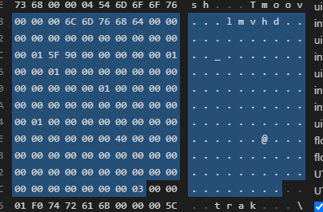
[mvhd] Size=108 Version=0 Flags=0x000000 CreationTimeV0=0 ModificationTimeV0=0 Timescale=90000 DurationV0=0 Rate=1 Volume=256 Matrix=[0x10000, 0x0, 0x0, 0x0, 0x10000, 0x0, 0x0, 0x0, 0x40000000] PreDefined=[0, 0, 0, 0, 0, 0] NextTrackID=3
trak
trak box 就是主要存放相关 media stream 的内容，容器盒子。
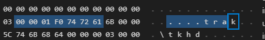
音频相关：
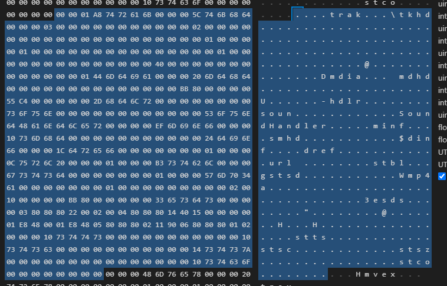
tkhd
tkhd 是 trak box 的子一级 box 的内容。主要是用来描述该特定 trak 的相关内容信息。
+--------+------+-------+-------------+-------------+-----------------+--------+--------+--------+----------+--------+------+---------------+------+--------+--------+------+------+
|tkhd Box| | | | | | | | | | | | | | | | | |
+--------+------+-------+-------------+-------------+-----------------+--------+--------+--------+----------+--------+------+---------------+------+--------+--------+------+------+
|size |type |version|flag |creation_time|modification_time|track_ID|reserved|duration|reserved |reserved|layer |alternate_group|volume|reserved|matrix |width |height|
+--------+------+-------+-------------+-------------+-----------------+--------+--------+--------+----------+--------+------+---------------+------+--------+--------+------+------+
|4bytes |"tkhd"|1bytes |3bytes |4bytes |4bytes |4bytes |4bytes*0|4bytes |4*2bytes*0|2bytes*0|2bytes|2bytes |2bytes|2bytes*0|4*9bytes|4bytes|4bytes|
+--------+------+-------+-------------+-------------+-----------------+--------+--------+--------+----------+--------+------+---------------+------+--------+--------+------+------+
- flags：按位或操作获得。0x000001，表示这个track是启用的，当值为0x000000，表示这个track没有启用；值为0x000002，表示当前track在播放时会用到；值为0x000004，表示当前track用于预览模式；
- layer:图层
- alternate_group:备用分组ID
- volume:当是音频帧时，为
0x0100否则为0 - matrix:
0x00010000,0,0,0,0x00010000,0,0,0,0x40000000
实例：
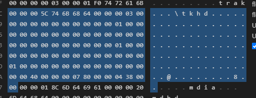
[tkhd] Size=92 Version=0 Flags=0x000003 CreationTimeV0=0 ModificationTimeV0=0 TrackID=1 DurationV0=0 Layer=0 AlternateGroup=0 Volume=0 Matrix=[0x10000, 0x0, 0x0, 0x0, 0x10000, 0x0, 0x0, 0x0, 0x40000000] Width=1920 Height=1080
mdia
mdia 主要用来包裹相关的 media 信息，容器盒子。

mdhd
Media Header Box
+--------+------+-------+-------------+-----------------+---------+--------+------+--------+
|mdhd Box| | | | | | | | |
+--------+------+-------+-------------+-----------------+---------+--------+------+--------+
|size |type |version|creation_time|modification_time|timescale|duration|pad |language|
+--------+------+-------+-------------+-----------------+---------+--------+------+--------+
|4bytes |"mdhd"|4bytes |4bytes |4bytes |4bytes |4bytes |1bit*0|5*3bit |
+--------+------+-------+-------------+-----------------+---------+--------+------+--------+
实例：

[mdhd] Size=32 Version=0 Flags=0x000000 CreationTimeV0=0 ModificationTimeV0=0 Timescale=48000 DurationV0=0 Language="und" PreDefined=0
hdlr
媒体处理器声明
+--------+------+-------+-----------+------------+----------+--------------------------------+
|hdlr Box| | | | | | |
+--------+------+-------+-----------+------------+----------+--------------------------------+
|size |type |version|pre_defined|handler_type|reserved |data |
+--------+------+-------+-----------+------------+----------+--------------------------------+
|4bytes |"hdlr"|4bytes |4bytes |4bytes |4*3bytes*0|"VideoHandler" or "SoundHandler"|
+--------+------+-------+-----------+------------+----------+--------------------------------+
- handler_type:类型
vide : Video track
soun : Audio track
hint : Hint track
meta : Timed Metadata track
auxv : Auxiliary Video track
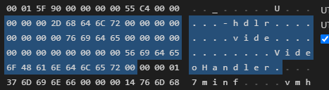
minf
媒体信息容器，当前 track 的基本描述信息，容器盒子。

vmhd
Video Media Header Box，只有视频帧才存在。
+--------+------+-------+------------+----------+
|vmhd Box| | | | |
+--------+------+-------+------------+----------+
|size |type |version|graphicsmode|opcolor |
+--------+------+-------+------------+----------+
|4bytes |"vmhd"|4bytes |2bytes*0 |2*3bytes*0|
+--------+------+-------+------------+----------+

dinf
Data Information Box，容器盒子。
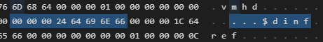
dref
设置当前Box描述信息的 data_entry。
+--------+------+--------+-----------+-------------+------+-----------+
|dref Box| | | | | | |
+--------+------+--------+-----------+-------------+------+-----------+
|size |type |version |entry_count|entry_version|'url '|entry_flags|
+--------+------+--------+-----------+-------------+------+-----------+
|4bytes |"dref"|4bytes*0|4bytes |4bytes |'url '|3bytes |
+--------+------+--------+-----------+-------------+------+-----------+
- entry_count:从1递增
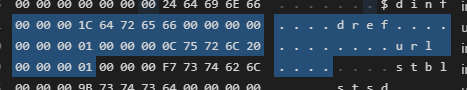
stbl
采样表，容器盒子。
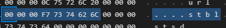
stsd
采样描述。

stts
描述simple的dts，使用dts间隔(sampleDelta)(时长)
+-----------+-----------+-------+------+----------+--------+
|stts Box | | | | | |
+-----------+-----------+-------+------+----------+--------+
|size |type |version|flags |entryCount|[option]|
+-----------+-----------+-------+------+----------+--------+
|4bytes |'stts' |1byte |3bytes|4bytes |[] |
+-----------+-----------+-------+------+----------+--------+
|option | | | | | |
+-----------+-----------+-------+------+----------+--------+
|sampleCount|sampleDelta| | | | |
+-----------+-----------+-------+------+----------+--------+
|4bytes/per |4bytes/per | | | | |
+-----------+-----------+-------+------+----------+--------+
entryCount: sampleCount、sampleDelta对总数
sampleCount: sample数量(相同sampleDelta)
sampleDelta: dts间隔
不同sampleDelta再起新的sampleCount、sampleDelta
实例：
[stts] size=6744 version=0 flags=000000
- sampleCount: 841
- entry[1]: sampleCount=1 sampleDelta=2880
- entry[2]: sampleCount=1 sampleDelta=3060
- entry[3]: sampleCount=2 sampleDelta=2970
- entry[4]: sampleCount=1 sampleDelta=3060
...
在fmp4中，将不会有内容
stsz
描述了每个simple的size
+----------+------+-------+------+----------+--------+
|stsz Box | | | | | |
+----------+------+-------+------+----------+--------+
|size |type |version|flags |entryCount|[option]|
+----------+------+-------+------+----------+--------+
|4bytes |'stsz'|1byte |3bytes|8bytes |[] |
+----------+------+-------+------+----------+--------+
|option | | | | | |
+----------+------+-------+------+----------+--------+
|size | | | | | |
+----------+------+-------+------+----------+--------+
|4bytes/per| | | | | |
+----------+------+-------+------+----------+--------+
实例：
[stsz] size=5060 version=0 flags=000000
- sampleCount: 1260
- sample[1] size=202816
- sample[2] size=14361
- sample[3] size=14366
...
在fmp4中，将不会有内容
stsc
描述了chunk中有多少simple
+----------+---------------+-------------------+------+----------+--------+
|stsc Box | | | | | |
+----------+---------------+-------------------+------+----------+--------+
|size |type |version |flags |entryCount|[option]|
+----------+---------------+-------------------+------+----------+--------+
|4bytes |'stsc' |1byte |3bytes|4bytes |[] |
+----------+---------------+-------------------+------+----------+--------+
|option | | | | | |
+----------+---------------+-------------------+------+----------+--------+
|firstChunk|samplesPerChunk|sampleDescriptionID| | | |
+----------+---------------+-------------------+------+----------+--------+
|4bytes/per|4bytes/per |4bytes/per | | | |
+----------+---------------+-------------------+------+----------+--------+
entryCount: firstChunk、samplesPerChunk、sampleDescriptionID对总数
firstChunk: 同数量samplesPerChunk开始索引
samplesPerChunk: 一个chunk有多少sample
sampleDescriptionID: 通常为1
实例：
[stsc] size=52 version=0 flags=000000
- entryCount: 3
- entry[1]: firstChunk=1 samplesPerChunk=1 sampleDescriptionID=1
- entry[2]: firstChunk=720 samplesPerChunk=2 sampleDescriptionID=1
- entry[3]: firstChunk=721 samplesPerChunk=1 sampleDescriptionID=1
在fmp4中，将不会有内容
stco
描述chunk的偏移量
+-----------+------+-------+------+----------+--------+
|stco Box | | | | | |
+-----------+------+-------+------+----------+--------+
|size |type |version|flags |entryCount|[option]|
+-----------+------+-------+------+----------+--------+
|4bytes |'stco'|1byte |3bytes|4bytes |[] |
+-----------+------+-------+------+----------+--------+
|option | | | | | |
+-----------+------+-------+------+----------+--------+
|chunkOffset| | | | | |
+-----------+------+-------+------+----------+--------+
|4bytes/per | | | | | |
+-----------+------+-------+------+----------+--------+
实例：
[stco] size=5052 version=0 flags=000000
- entryCount: 1259
- entry[1]: chunkOffset=255979
- entry[2]: chunkOffset=271146
...
在fmp4中，将不会有内容

co64
描述chunk的偏移量，是stco的替代（当偏移量过大，4bytes无法容纳时）
+-----------+------+-------+------+----------+--------+
|co64 Box | | | | | |
+-----------+------+-------+------+----------+--------+
|size |type |version|flags |entryCount|[option]|
+-----------+------+-------+------+----------+--------+
|4bytes |'co64'|1byte |3bytes|4bytes |[] |
+-----------+------+-------+------+----------+--------+
|option | | | | | |
+-----------+------+-------+------+----------+--------+
|chunkOffset| | | | | |
+-----------+------+-------+------+----------+--------+
|8bytes/per | | | | | |
+-----------+------+-------+------+----------+--------+
mvex
Movie Extend box，容器盒子。
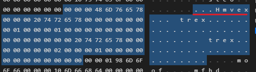
trex
Track Extends Box。

moof
容器盒子。

mfhd
trak默认设置。

traf
容器盒子。
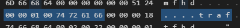
tfhd
指定trak默认设置
+-------+------+-------+-------+--------+------+
|tfhdBox| | | | | |
+-------+------+-------+-------+--------+------+
|size |type |version|tr_flag|track_id|option|
+-------+------+-------+-------+--------+------+
|4bytes |"tfhd"|1byte |3bytes |4bytes |option|
+-------+------+-------+-------+--------+------+
- track_id:必须，其他都是可选
- tr_flag:使用或运算，表示后面存在什么可选值
tr_flag:使用或运算
0x000001: 应用base_data_offset0x000002: 应用sample_description_index0x000008: 应用default_sample_duration0x000010: 应用default_sample_size0x000020: 应用default_sample_flags0x010000: duration‐is‐empty0x020000: default‐base‐is‐moof
+----------------+------------------------+-----------------------+-------------------+--------------------+
|option | | | | |
+----------------+------------------------+-----------------------+-------------------+--------------------+
|base_data_offset|sample_description_index|default_sample_duration|default_sample_size|default_sample_flags|
+----------------+------------------------+-----------------------+-------------------+--------------------+
|8bytes |4bytes |4bytes |4bytes |4bytes |
+----------------+------------------------+-----------------------+-------------------+--------------------+

tfdt
sample编码绝对时间
+-------+------+-------+--------+-------------------+
|tfdtBox| | | | |
+-------+------+-------+--------+-------------------+
|size |type |version|0 |baseMediaDecodeTime|
+-------+------+-------+--------+-------------------+
|4bytes |"tfdt"|0x00 |7bytes*0|4bytes |
+-------+------+-------+--------+-------------------+
|size |type |version|0 |baseMediaDecodeTime|
+-------+------+-------+--------+-------------------+
|4bytes |"tfdt"|0x01 |3bytes*0|8bytes |
+-------+------+-------+--------+-------------------+

[tfdt] Size=20 Version=1 Flags=0x000000 BaseMediaDecodeTimeV1=3606930000
trun
sample相关内容。
+--------+------+-------+-------+------------+-----------+------------------+----------+
|trun box| | | | | | | |
+--------+------+-------+-------+------------+-----------+------------------+----------+
|size |"trun"|version|tr_flag|sample_count|data_offset|first_sample_flags|[optional]|
+--------+------+-------+-------+------------+-----------+------------------+----------+
|4bytes |"trun"|1byte |3bytes |4bytes |4bytes |4bytes |[] |
+--------+------+-------+-------+------------+-----------+------------------+----------+
tr_flag:使用或运算
0x000001: 应用data-offset0x000004: 应用first_sample_flags0x000100: sample使用自己的duration时长，若无，使用默认0x000200: sample使用自己的size长度，若无，使用默认0x000400: sample使用自己的flag，若无，使用默认0x000800: sample使用自己的stc，若无，使用默认
+---------------+-----------+------------+-----------------------------------+
|optional | | | |
+---------------+-----------+------------+-----------------------------------+
|sample_duration|sample_size|sample_flags|sample_composition_time_offset(cts)|
+---------------+-----------+------------+-----------------------------------+
|4bytes |4bytes |4bytes |4bytes |
+---------------+-----------+------------+-----------------------------------+
+------------+-----------------+---------------------+---------------------+--------------------+---------------+---------------------------+
|sample_flags| | | | | | |
+------------+-----------------+---------------------+---------------------+--------------------+---------------+---------------------------+
|reserved |sample_depends_on|sample_is_depended_on|sample_has_redundancy|sample_padding_value|non_sync_sample|sample_degradation_priority|
+------------+-----------------+---------------------+---------------------+--------------------+---------------+---------------------------+
|6bits |2bits |2bits |2bits |3bits |1bit |16bits |
+------------+-----------------+---------------------+---------------------+--------------------+---------------+---------------------------+
sample_depends_on:
- 0: 未知
- 1: 非I帧
- 2: I帧
- 3: 保留
目前观察到的两种视频sample_flags
0x02000000: I帧0x01010000: 非I帧
实例：
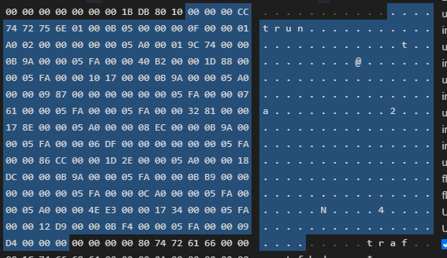
[trun] Size=204 Version=1 Flags=0x000b05 SampleCount=15 DataOffset=416 FirstSampleFlags=0x2000000
Entries=[{SampleDuration=1440 SampleSize=105588 SampleCompositionTimeOffsetV1=2970},
{SampleDuration=1530 SampleSize=16562 SampleCompositionTimeOffsetV1=7560},
{SampleDuration=1530 SampleSize=4119 SampleCompositionTimeOffsetV1=2970},
{SampleDuration=1440 SampleSize=2439 SampleCompositionTimeOffsetV1=0},
{SampleDuration=1530 SampleSize=1889 SampleCompositionTimeOffsetV1=1530},
{SampleDuration=1530 SampleSize=12929 SampleCompositionTimeOffsetV1=6030},
{SampleDuration=1440 SampleSize=2284 SampleCompositionTimeOffsetV1=2970},
{SampleDuration=1530 SampleSize=1759 SampleCompositionTimeOffsetV1=0},
{SampleDuration=1530 SampleSize=34508 SampleCompositionTimeOffsetV1=7470},
{SampleDuration=1440 SampleSize=6364 SampleCompositionTimeOffsetV1=2970},
{SampleDuration=1530 SampleSize=3001 SampleCompositionTimeOffsetV1=0},
{SampleDuration=1530 SampleSize=3232 SampleCompositionTimeOffsetV1=1530},
{SampleDuration=1440 SampleSize=20195 SampleCompositionTimeOffsetV1=5940},
{SampleDuration=1530 SampleSize=4825 SampleCompositionTimeOffsetV1=3060},
{SampleDuration=1530 SampleSize=2516 SampleCompositionTimeOffsetV1=0}]
mdat
sample，容器盒子。
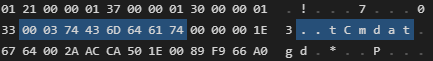
参考
本文图表生成
- 原文作者：qydysky
- 原文链接：/post/20221025fmp4/
- 版权声明：本作品采用知识共享署名-非商业性使用-禁止演绎 4.0 国际许可协议进行许可，非商业转载请注明出处（作者，原文链接），商业转载请联系作者获得授权。